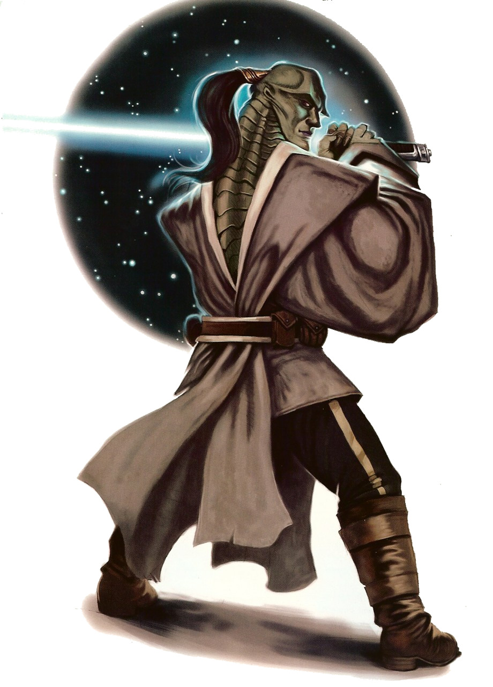

Falleen
falleen
Special Abilities: Falleen begin the game with one rank in Charm. They still may not train Charm above rank 2 during character creation.
Beguiling Pheromones: By emitting pheromones and altering their skin color, Falleen can affect emotional states of other sentients. Once per check as an incidental, a Falleen may suffer 2 strain to upgrade the ability of a Charm, Deception, or Negotiation check against a living sentient being within short range once. This ability has no effect on targets wearing breath masks or without respiratory systems.
Beneath the glamorous reptilian features and serene facade of the mysterious Falleen lies a shrewd mind and cold-blooded precision. A Falleen uses wiles and unique pheromones, intoxicating to most species, to achieve great things and manipulate members of other species with ease.
The Falleen are alluring reptilian humanoids with skin of supple scales in tones ranging from deep green to a dull gray-green hue. Flowever, Falleen can temporarily change their skin color at will to shades of orange or red when they exude potent pheromones to attract mates. The scales of their lithe, contoured physiques stiffen along their backs, where sharp ridges run down their spines. Female Falleen exhibit muted skin tones and less-defined spinal ridges compared to males, and their ability to modify their skin pigmentation is less pronounced.
The exotic features of the Falleen make them among the most universally attractive beings in the galaxy, and their grooming and the use of their pheromones only enhance this view. Flowing, silky black hair accentuates their etched cheekbones and chiseled facial features. The males typically wear their hair in a single long topknot or braid, while the females favor setting their flowing locks into elaborate styles adorned with beads and decorative combs. The talons on their fingers and toes remain manicured yet simple.
The Falleen species shares its name with its homeworld, which some say is as a tribute to its arrogance. Several feudal kingdoms rule over lower classes of artisans, laborers, slaves, and technicians. The ruling noble houses peacefully conduct business and political negotiations on behalf of their world while administering domestic corporations and private interests. While minor infighting between kingdoms occurs, Falleen nobles choose scheming and political maneuvering as their weapons in place of outright war
Falleen value careful planning and reason, believing emotion is the natural enemy to a clear and intelligent mind. They consider displays of emotion taboo, and go to great lengths to control any outward emotional indicators. Through intense training and meditation, Falleen learn to rein in their emotions, control the color of their skin, and hone the use of pheromones to enthrall others. Falleen see species unable to control their emotions as inferior, and usually take little interest in their affairs—though many do enjoy the art of other, more expressive species
While the technology of their civilization allows them to travel to other worlds, most Falleen commoners never leave their planet. The lower social classes work diligently to maintain their planet’s selfsufficiency in order to keep from relying on lesser species elsewhere in the galaxy. Instead, the Falleen opt to isolate their society from outside influences. The sale of Falleen slaves to offworlders is one of the rare exceptions to this cultural norm.
As a rite of passage, young Falleen nobles embark on a pilgrimage around the known galaxy to behold its many spectacles and learn how to harness their abilities. When the pilgrims return from their journey, most use what they have learned to better govern the territories they inherit. Flowever, some pilgrims decide to remain offworld to make their mark on the galaxy.
The planet Falleen rests in a pocket of space in the Mid Rim off the Corellian Run called the Doldur sector, and in some small way, Falleen has been a part of the greater galactic community for nearly four thousand years. The expansive rain forests, sprawling plains, and snowy mountains of Falleen remain unmolested over most of the planet thanks to modest urban sectors reserved for industry. Industrial zones like the polluted Yellow District in the capital city of Throne are common within every kingdom. This efficient production allows the population of over 520 million inhabitants to remain self-sufficient. After joining the Republic, the Falleen nobility opened their world to galactic commerce and offered their manufacturing districts to offworld corporations.
Since the Empire’s rise to power, Imperial research and development facilities monopolize Falleen’s industrial sectors. Eisen Kerioth, Moff of the Doldur sector, distrusts the Falleen due to their ability to manipulate others, and he keeps a watchful eye on the planet. To minimize Falleen influence on the rest of the galaxy, and to monitor the Empire’s interests on their world, Kerioth maintains a blockade around the planet. Throne’s stellar-class starport, once open to offworld traders importing artwork and exotic fruits, now allows only Imperial traffic and Falleen nobility on pilgrimage. As a result, multiple shadowports operate around the planet, exporting slaves and smuggling in offworld luxuries.
Almost all Falleen learn to speak Basic to interact with Imperial personnel or traders on their homeworld, to serve offworlders as slaves, or to communicate with other species while on their pilgrimage. Flowever, Falleen believe that, like all other things, the offworlders’ language is inferior to their own. The lack of inflection and emphasis in the Falleen language is indicative of their stoic culture and makes it easy for other species to learn.
However, the use of skin coloration and pheromones to replace the absent modulation makes it impossible for non-Falleen, even droid translators, to master their language. The fact that only Falleen can fully grasp the intricacies of their language serves to reinforce the elitist stance that Falleen stand above all other species.
On the outskirts of Galactic society, the Falleen are best known for their members who serve as the masters of the Black Sun syndicate, which operated out of Mustafar during the Clone Wars. Falleen on the fringe might be connected to these powerful individuals—perhaps having fallen from grace as rising members of the syndicate—or they might be honest members of society who wish to be free of the criminal associations many sentients hold about their species. Regardless of their backgrounds, however, many Falleen press their innate advantage, using their manipulative abilities on unsuspecting sentient beings in order to attain lofty positions and wealth with ease.
Several atrocities that have occurred on Falleen at the Empire’s hands have bred an intense disdain for the Emperor and his regime within the non-ruling Falleen classes. A handful of Rebel cells, operating out of Silver Station, hidden in the nearby Dragonflower Nebula, use this discontent to recruit Falleen to their cause.
When the Empire came to Falleen and nationalized many corporate manufacturing plants, the Falleen noble houses assumed it was no different from one of the countless retooling phases or corporate restructurings they had seen in the past. When the noble houses stopped receiving dividends from company shares and rent for the facilities ran within their kingdoms, they grew outraged. Next, when the blockade formed over their planet to prevent all incoming and outgoing traffic, the kings said the Empire had gone too far, but they were unaware of how much worse things would become.
In the wake of the burgeoning conflict, some Falleen have fled their planet, while others have turned to the Rebel Alliance for aid.